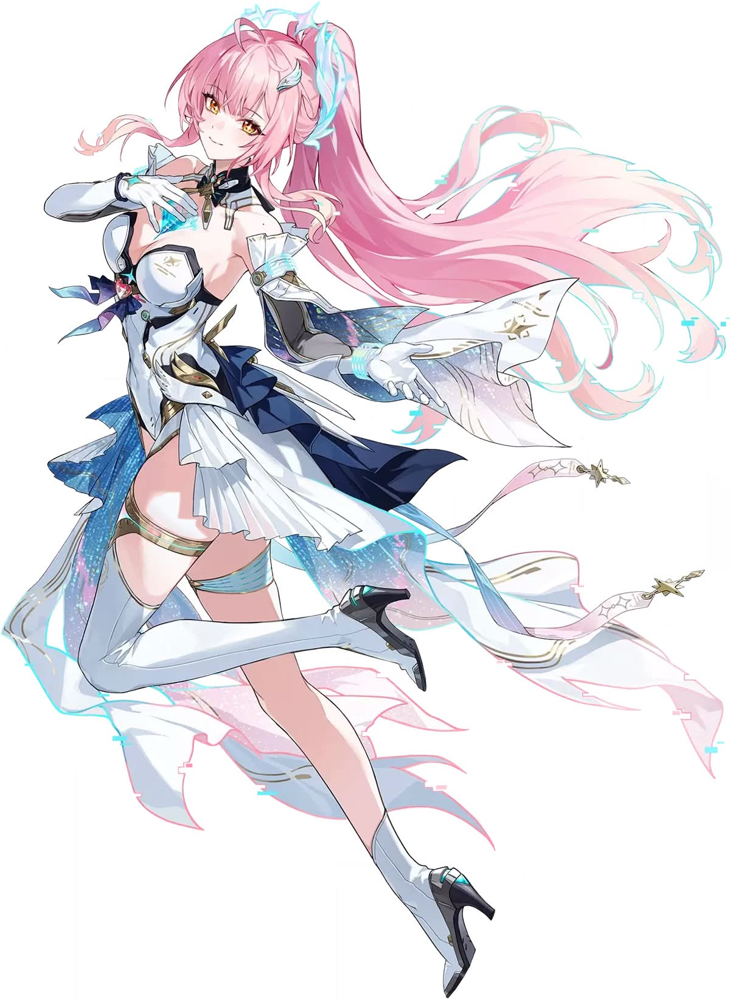
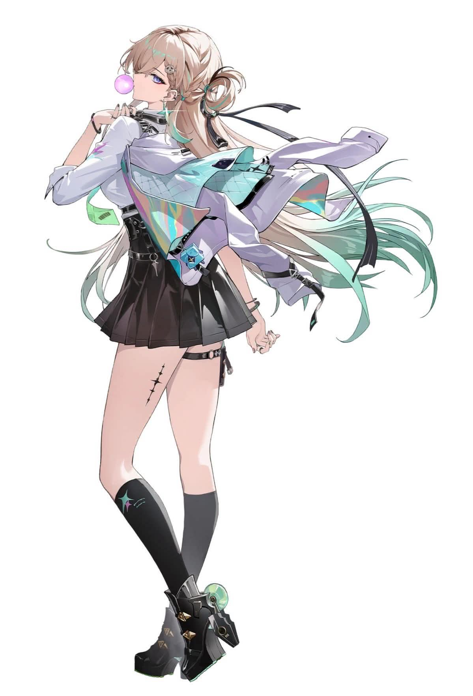
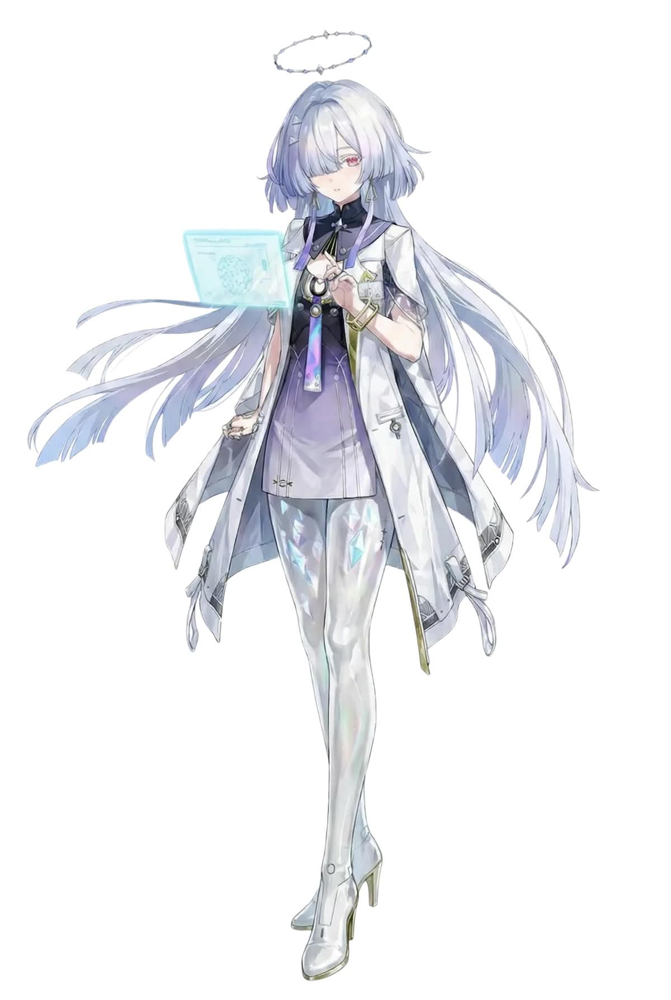
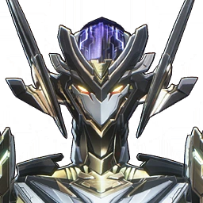
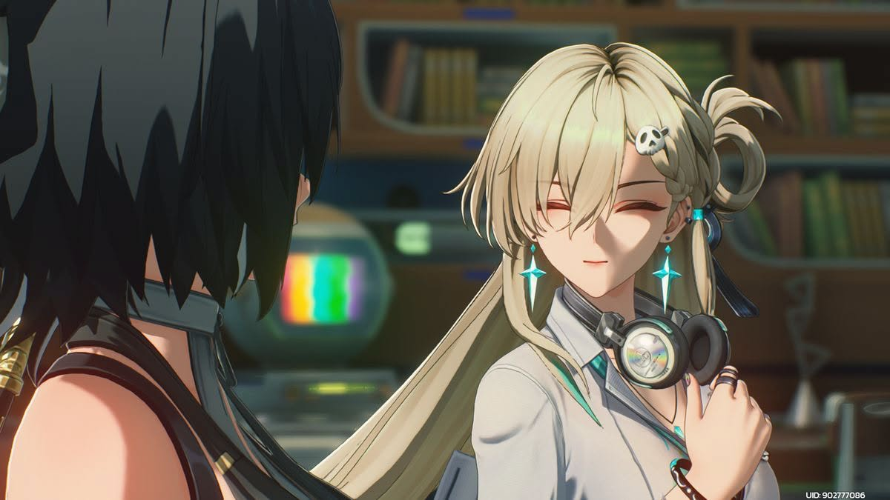
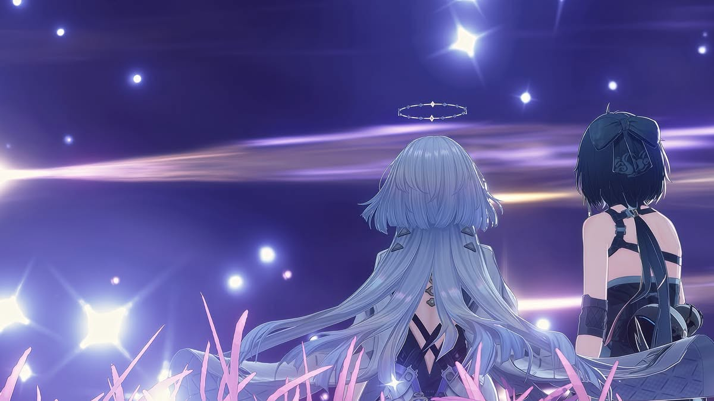
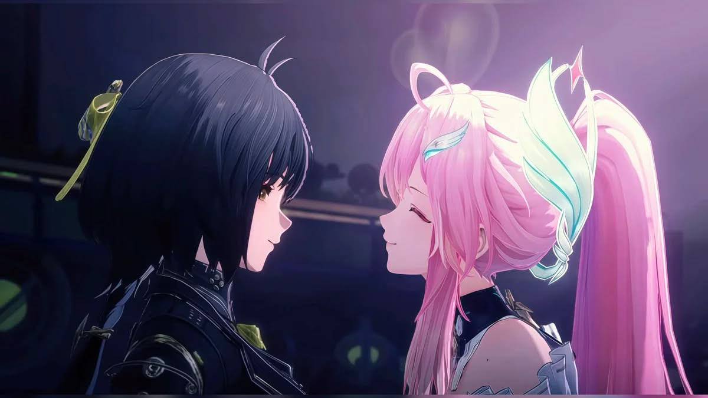

MAIN ATTACKER
エイメス
エイメスは高い瞬間火力と継続火力を両立できるメインアタッカー。 バフ役や回復役と組み合わせることで、安定しながら高火力を出せる。
役割
メインDPS
強み
高火力
編成
バフ型
おすすめ編成
MAIN
エイメス
メイン火力担当。バフを受けて一気にダメージを出す。

SUB
リンネー
サブ火力・補助担当。エイメスの攻撃展開を支える。

SUPPORT
モーニエ
回復・安定感担当。高難度でも編成を崩しにくくする。
編成コンセプト
モーニエで安定性を確保し、リンネーで火力を補助。 最後にエイメスへ交代して一気に火力を出す構成。 見た目も攻略サイトらしく、役割が分かりやすい編成。
育成優先度
1
共鳴解放
火力の中心。最優先で強化。
2
共鳴スキル
瞬間火力を伸ばせる重要項目。
3
通常攻撃
余裕があれば強化。
おすすめ音骸

ECHO BUILD
火力特化型
会心率・会心ダメージ・属性ダメージを優先。 攻撃力だけでなく、会心系を整えることで火力が安定しやすい。
| 部位 | おすすめメイン効果 |
|---|---|
| 4コスト | 会心率 / 会心ダメージ |
| 3コスト | 属性ダメージ |
| 1コスト | 攻撃力% |
立ち回り
01
モーニエで回復・補助を準備
02
リンネーでバフやサブ火力を展開
03
エイメスに交代
04
共鳴スキル・共鳴解放で一気に攻撃
05
サポートに戻して再ローテーション
ギャラリー


